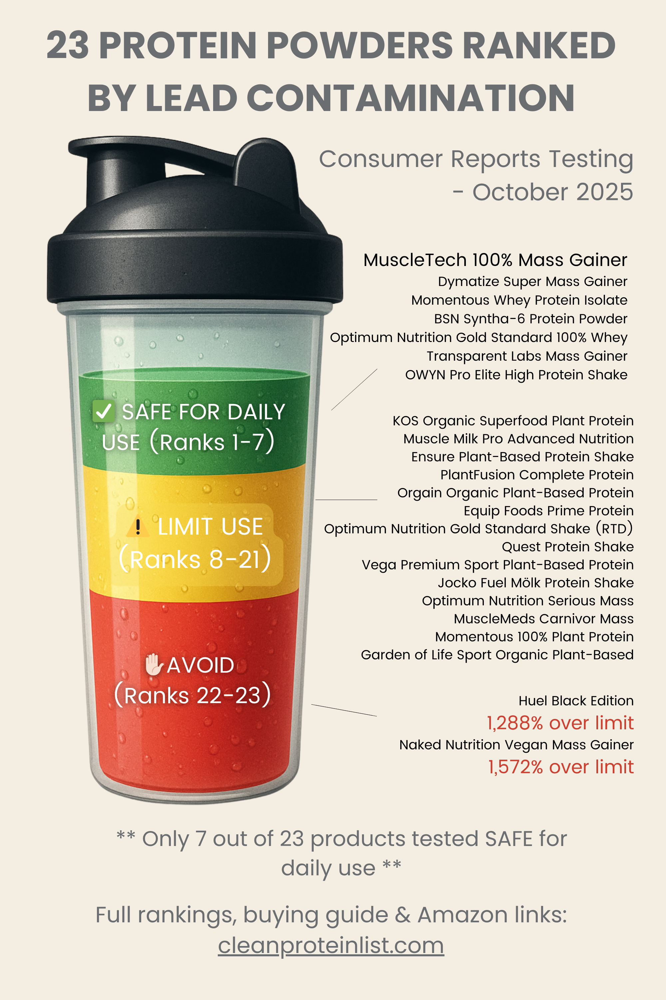

Lead in Protein Powder: Complete List of 23 Tested Brands (2026 Update)
How We Analyzed These Protein Powders for Lead Content
Independent Data Source: 2025/2026 Testing Data from Consumer Reports & Clean Label Project
Our 4-Step Safety Protocol:
- Source: We aggregate verified data from third-party labs (Consumer Reports, Clean Label Project, NSF).
- Benchmark: Contamination is measured against California Prop 65 safe harbor levels (0.5 µg/day lead).
- Categorize: Products are ranked as Safe, Limit Use, or Avoid based on toxic accumulation.
- Recommend: If a brand fails, we provide verified-clean alternatives that fit your budget.
✓ 100% Independent: Clean Protein List accepts no brand sponsorships or payments for rankings.
Analysis verified by US Military Veteran & Supplement Safety Researcher, Ray Rothwell.
On October 14, 2025, Consumer Reports published comprehensive heavy metal testing results for 23 popular protein powders. The findings were alarming: some brands contained lead levels up to 15 times over California's safe limits.
January 2026 Update: While the core Consumer Reports data was released in late 2025, we have cross-referenced these rankings with new January 2026 batch certifications from the Clean Label Project to ensure these "Safe for Daily Use" recommendations remain accurate for the current year.
This is the complete, definitive list of all 23 products tested, ranked from safest to most contaminated, with detailed analysis of what the data means for your health.
Key Findings from Consumer Reports Testing:
- Only 7 of 23 products (30%) rated "Better for daily consumption"
- 2 products (9%) received "AVOID" ratings with lead levels 12-15x over safe limits
- Plant-based proteins dominated the worst rankings - Bottom 17 products include 13 plant-based
- Whey proteins consistently tested cleanest - Top 6 all dairy-based
- Price doesn't equal safety - Expensive brands (Huel $3/serving, Momentous Plant) tested poorly
- Ready-to-drink shakes performed worse than powders on average
Jump to Section:
Complete Rankings Safe for Daily Use (Top 7) Okay Occasionally (8-19) Limit to Once Per Week (20-21) Products to AVOID (22-23) What the Data Means How to Choose Safe ProteinComplete Consumer Reports Rankings: All 23 Products
Ranked from safest (#1) to most contaminated (#23). "Concern Level" shows percentage over California Prop 65 safe limit of 0.5 µg lead per day.
📊 Quick Visual Reference
Save or share this infographic showing all 23 products ranked:
{kind=link}
| Rank | Product | Concern Level | Max Servings | CR Guidance |
|---|---|---|---|---|
| 1 | MuscleTech 100% Mass Gainer | Lead not detected | No limit | ✅ Daily consumption |
| 2 | Dymatize Super Mass Gainer | 25% over limit | 4 servings/day | ✅ Daily consumption |
| 3 | Momentous Whey Protein Isolate | 30% over limit | 3.3 servings/day | ✅ Daily consumption |
| 4 | BSN Syntha-6 Protein Powder | 46% over limit | 2 servings/day | ✅ Daily consumption |
| 5 | Optimum Nutrition Gold Standard 100% Whey | 56% over limit | 1.75 servings/day | ✅ Daily consumption |
| 6 | Transparent Labs Mass Gainer | 87% over limit | 1 serving/day | ✅ Daily consumption |
| 7 | OWYN Pro Elite High Protein Shake | 88% over limit | 1 serving/day | ✅ Daily consumption |
| 8 | KOS Organic Superfood Plant Protein | 112% over limit | 6¼ servings/week | ⚠️ Occasional use |
| 9 | Muscle Milk Pro Advanced Nutrition | 128% over limit | 5.5 servings/week | ⚠️ Occasional use |
| 10 | Ensure Plant-Based Protein Shake | 132% over limit | 5 servings/week | ⚠️ Occasional use |
| 11 | PlantFusion Complete Protein | 140% over limit | 5 servings/week | ⚠️ Occasional use |
| 12 | Orgain Organic Plant-Based Protein | 143% over limit | 4.75 servings/week | ⚠️ Occasional use |
| 13 | Equip Foods Prime Protein | 144% over limit | 4.75 servings/week | ⚠️ Occasional use |
| 14 | Optimum Nutrition Gold Standard Shake (RTD) | 150% over limit | 4â…" servings/week | ⚠️ Occasional use |
| 15 | Quest Protein Shake | 161% over limit | 4.33 servings/week | ⚠️ Occasional use |
| 16 | Vega Premium Sport Plant-Based Protein | 185% over limit | 3.75 servings/week | ⚠️ Occasional use |
| 17 | Jocko Fuel Mölk Protein Shake | 199% over limit | 3.5 servings/week | ⚠️ Occasional use |
| 18 | Optimum Nutrition Serious Mass | 202% over limit | 3.5 servings/week | ⚠️ Occasional (arsenic concern) |
| 19 | MuscleMeds Carnivor Mass | 247% over limit | 2.75 servings/week | ⚠️ Occasional use |
| 20 | Momentous 100% Plant Protein | 476% over limit | 1½ servings/week | â›" Once per week max |
| 21 | Garden of Life Sport Organic Plant-Based | 564% over limit | 1¼ servings/week | â›" Once per week max |
| 22 | Huel Black Edition | 1,288% over limit | 0 servings/week | 🚫 AVOID |
| 23 | Naked Nutrition Vegan Mass Gainer | 1,572% over limit | 0 servings/week | 🚫 AVOID |
Check Your Brand in 60 Seconds
Take our quiz to see where your current protein powder ranks and get personalized safe alternatives.
Take Free Quiz →📊 NEW: Expanded Database Available
This article covers the 23 Consumer Reports tested products. We've now published a comprehensive database analyzing 134+ brands (including Clean Label Project data).
→ View Complete Lead-Free Protein Brands Database (21 verified safe + 95+ untested brands)
The Data: By the Numbers
| Category | Count | Percentage |
|---|---|---|
| Total Products Tested | 23 | 100% |
| Safe for Daily Use | 7 | 30% |
| Okay Occasionally (Limit Use) | 14 | 61% |
| Avoid or Severely Limit | 2 | 9% |
Translation: If you picked a random protein powder off the shelf, you'd have only a 30% chance of getting one that's safe for daily consumption.
Products Safe for Daily Use (Ranks 1-7)
These 7 products received Consumer Reports' "Better for daily consumption" rating with lead levels low enough for regular use:
MuscleTech 100% Mass Gainer
Lead Level: Not detected (undetectable)
Max Servings: No limit
Type: Whey-based mass gainer
Price: ~$0.85/serving
Best For: Bulking, mass gaining, hardgainers
Bottom Line: The absolute cleanest protein powder tested. If safety is your #1 priority, this is it.
→ Read full MuscleTech analysis
Buy on Amazon →Dymatize Super Mass Gainer
Lead Level: 25% over limit (still very low)
Max Servings: 4 per day
Type: Whey-based mass gainer
Price: ~$0.90/serving
Best For: Mass gaining, high-calorie needs
Bottom Line: Second-safest option, excellent for bulking.
Buy on Amazon →Momentous Whey Protein Isolate
Lead Level: 30% over limit (very low)
Max Servings: 3.3 per day
Type: Whey protein isolate
Certifications: NSF Certified for Sport
Price: ~$2.50/serving (premium)
Best For: Competitive athletes, drug-tested sports
Bottom Line: Premium option with NSF verification. Worth the price for tested athletes.
→ Read full Momentous analysis
Buy on Amazon →BSN Syntha-6 Protein Powder
Lead Level: 46% over limit (low)
Max Servings: 2 per day
Type: Multi-source whey/casein blend
Price: ~$1.00/serving
Best For: Taste-focused users, post-workout recovery
Bottom Line: Best-tasting safe protein. Sweet spot of flavor and safety.
Buy on Amazon →Optimum Nutrition Gold Standard 100% Whey
Lead Level: 56% over limit (low)
Max Servings: 1.75 per day
Type: Whey protein concentrate/isolate blend
Certifications: Clean Label Project "Clean Sixteen"
Price: ~$0.75/serving (best value)
Best For: Everyone - safe, affordable, proven
Why We Recommend This: Double-verified safe (Consumer Reports #5 + Clean Label certified). World's #1 selling protein. Available everywhere. Incredible value at $0.75/serving.
Bottom Line: If you can only choose one, choose this.
→ Read full Optimum Nutrition analysis
5lb tub = 74 servings (~$0.74/serving)
Transparent Labs Mass Gainer
Lead Level: 87% over limit (moderate-low)
Max Servings: 1 per day
Type: Whey-based mass gainer
Price: ~$2.00/serving
Best For: Clean bulking, ingredient transparency
Bottom Line: Premium clean mass gainer for transparency-focused users.
Buy on Amazon →OWYN Pro Elite High Protein Shake
Lead Level: 88% over limit (moderate-low)
Max Servings: 1 per day
Type: Plant-based RTD shake
Certifications: Informed Choice certified
Price: ~$2.75/shake
Best For: Vegans, lactose intolerant, plant-based athletes
Why This Matters: The ONLY plant-based protein rated safe for daily use. If you need plant protein, this is your only verified option.
Buy on Amazon →⚡ Quick Check: Is YOUR Protein Safe?
Tell us what you're using - we'll show you the safety data in 5 seconds:
💵 Budget Alternative: Body Fortress ($0.67/serving)
Not in Consumer Reports testing, but Clean Label Project "Clean Sixteen" certified (non-detectable lead, arsenic, cadmium, mercury).
If you need the absolute cheapest verified-safe option, Body Fortress is $0.67/serving vs $0.75 for Optimum Nutrition.
Okay for Occasional Use (Ranks 8-19)
These 12 products can be used occasionally but should NOT be consumed daily due to elevated lead levels:
8. KOS Organic Superfood Plant Protein
- Lead Level: 112% over limit
- Max Servings: 6¼ per week (less than daily)
- Type: Plant-based organic
- Bottom Line: Limit to 5-6 times per week maximum
9. Muscle Milk Pro Advanced Nutrition
- Lead Level: 128% over limit
- Max Servings: 5.5 per week
- Type: Ready-to-drink shake (dairy-based)
- Bottom Line: Popular brand but limit to 5 servings per week max. Powder version not tested.
10. Ensure Plant-Based Protein Shake
- Lead Level: 132% over limit
- Max Servings: 5 per week
- Type: Plant-based RTD shake
- Bottom Line: Medical nutrition brand, but plant-based version has elevated lead. Limit to 5x per week.
11. PlantFusion Complete Protein
- Lead Level: 140% over limit
- Max Servings: 5 per week
- Type: Plant-based blend
- Bottom Line: Fusion of multiple plant sources compounds contamination. Limit to 5x per week.
12. Orgain Organic Plant-Based Protein
- Lead Level: 143% over limit
- Max Servings: 4.75 per week
- Type: Organic plant-based
- Bottom Line: "Organic" doesn't mean clean. Limit to 4-5x per week. Switch to OWYN for daily use.
13. Equip Foods Prime Protein
- Lead Level: 144% over limit
- Max Servings: 4.75 per week
- Type: Grass-fed beef protein isolate
- Bottom Line: Alternative protein source, but still shows contamination. Limit to 4-5x per week.
14. Optimum Nutrition Gold Standard Shake (Ready-to-Drink)
- Lead Level: 150% over limit
- Max Servings: 4â…" per week
- Type: Ready-to-drink shake (dairy-based)
- Important: This is the RTD shake, NOT the powder. The powder (rank #5) is safe for daily use.
- Bottom Line: Stick with ON powder, not the RTD shake. Ready-to-drink shows higher contamination.
15. Quest Protein Shake
- Lead Level: 161% over limit
- Max Servings: 4.33 per week
- Type: Ready-to-drink shake (dairy-based)
- Bottom Line: Quest bars are fine, but RTD shakes have elevated lead. Limit to 4x per week.
16. Vega Premium Sport Plant-Based Protein
- Lead Level: 185% over limit
- Max Servings: 3.75 per week
- Type: Plant-based sport formula
- Bottom Line: Popular vegan brand, but nearly 2x over safe limit. Max 3-4x per week. Switch to OWYN.
17. Jocko Fuel Mölk Protein Shake
- Lead Level: 199% over limit
- Max Servings: 3.5 per week
- Type: Ready-to-drink shake
- Bottom Line: Nearly 2x over safe limit. Limit to 3x per week maximum.
18. Optimum Nutrition Serious Mass
- Lead Level: 202% over limit (arsenic, not lead)
- Max Servings: 3.5 per week
- Type: Whey-based mass gainer
- Note: This product's concern is inorganic arsenic, not lead
- Bottom Line: If you need a mass gainer, choose MuscleTech (#1) or Dymatize (#2) instead.
19. MuscleMeds Carnivor Mass
- Lead Level: 247% over limit
- Max Servings: 2.75 per week
- Type: Beef protein isolate mass gainer
- Bottom Line: Nearly 2.5x over safe limit. If using, max 2-3x per week. Better alternatives available.
Limit to Once Per Week (Ranks 20-21)
These products have dangerously high lead levels and should be severely limited:
20. Momentous 100% Plant Protein
- Lead Level: 476% over limit (4.76x over safe level)
- Max Servings: 1½ per week
- Type: Plant-based
- CR Guidance: "Limit to once per week"
- The Irony: Momentous Whey Isolate ranked #3 (very safe), but their plant protein ranked #20 (dangerous)
- Bottom Line: If using Momentous plant protein, severely limit use. Switch to their whey isolate or OWYN plant option.
21. Garden of Life Sport Organic Plant-Based Protein
- Lead Level: 564% over limit (5.64x over safe level)
- Max Servings: 1¼ per week
- Type: Organic plant-based sport formula
- CR Guidance: "Limit to once per week"
- Bottom Line: Premium price ($2+/serving) doesn't equal safety. Once per week maximum. Switch to OWYN.
Garden of Life is currently the subject of a class action lawsuit regarding misleading claims of its "clean" status in the wake of CR reporting.
Products to AVOID (Ranks 22-23)
Consumer Reports issued "AVOID" warnings for these two products with catastrophic lead levels:
22. Huel Black Edition 🚫
- Lead Level: 1,288% over limit (12.88x over safe level)
- Lead per Serving: 6.44 µg (safe limit is 0.5 µg)
- Max Servings: 0 per week
- CR Guidance: "AVOID"
- Type: Plant-based meal replacement
- Price: ~$2.50-3.00 per serving (premium price, catastrophic safety)
- If You're Using This: STOP IMMEDIATELY. Do not finish the container.
- Daily Use Impact: 2,349.6 µg lead per year (safe limit: 182.5 µg/year) = 12.88x over
- Bottom Line: Second-worst protein powder tested. Unacceptable contamination at any price.
23. Naked Nutrition Vegan Mass Gainer 🚫 WORST
- Lead Level: 1,572% over limit (15.72x over safe level)
- Lead per Serving: 7.86 µg (safe limit is 0.5 µg)
- Max Servings: 0 per week
- CR Guidance: "AVOID"
- Type: Plant-based mass gainer (pea protein)
- Serving Size: 315g (6 scoops) - massive serving compounds the problem
- If You're Using This: STOP IMMEDIATELY. This is the most contaminated product tested.
- Daily Use Impact: 2,869.9 µg lead per year (safe limit: 182.5 µg/year) = 15.72x over
- Bottom Line: Absolute worst protein powder in Consumer Reports testing. Dangerous for daily use.
Using One of These Brands? Find Safe Alternatives Now
Our quiz recommends verified-clean options based on your needs, preferences, and budget.
Get Personalized Recommendations →Looking for clean creatine to pair with your verified-safe protein? See our Complete Creatine Safety Guide with 15+ NSF tested brands.
What This Data Means for Your Health
Understanding the Percentages:
Consumer Reports measured lead levels against California Proposition 65's safe harbor level of 0.5 µg per day. This is one of the strictest standards globally.
| Product Example | Lead per Serving | % Over Limit | Annual Exposure (1/day) | vs Safe Limit |
|---|---|---|---|---|
| MuscleTech Mass Gainer | 0.01 µg | 0% | 3.65 µg/year | Safe |
| Optimum Nutrition Gold | ~0.28 µg | 56% | 102.2 µg/year | Within acceptable range |
| Vega Sport | ~0.93 µg | 185% | 339.5 µg/year | 1.86x over |
| Huel Black Edition | 6.44 µg | 1,288% | 2,350.6 µg/year | 12.88x over |
| Naked Nutrition Vegan | 7.86 µg | 1,572% | 2,869.9 µg/year | 15.72x over |
Safe Annual Limit: 182.5 µg lead per year (0.5 µg × 365 days)
Health Impacts of Lead Exposure:
Lead is a bioaccumulative toxin - your body absorbs it faster than it can eliminate it. Even low-level chronic exposure causes harm.
If you've been using contaminated protein powder daily for 6+ months, watch for:
- Neurological: Brain fog, memory problems, difficulty concentrating, headaches
- Physical: Chronic fatigue, muscle weakness, joint pain, abdominal discomfort
- Mood: Irritability, depression, anxiety, mood swings
- Cardiovascular: High blood pressure, heart palpitations
- Reproductive: Reduced fertility (both sexes), pregnancy complications
Most at risk:
- Daily users consuming 1-2+ servings per day
- Pregnant women or those planning pregnancy
- Children and teenagers (developing brains more vulnerable)
- People using mass gainers (larger serving sizes = more lead per shake)
→ Read full guide on lead poisoning symptoms
How to Choose Safe Protein Powder
The Clear Pattern from Consumer Reports Data:
1. Whey Proteins Are Significantly Safer Than Plant Proteins
| Protein Type | Average Ranking | Cleanest Options |
|---|---|---|
| Whey/Dairy-Based | Top 6 all whey | MuscleTech, Dymatize, Momentous, BSN, ON |
| Plant-Based | Bottom 17 includes 13 plant | Only OWYN (#7) rated safe |
Why plant proteins test worse: Plants absorb heavy metals from soil through their root systems. Pea, rice, and hemp protein are concentrated from crops grown in contaminated soil. The concentration process (20-30kg of peas → 1kg protein powder) amplifies any contamination present.
2. Third-Party Certifications Matter
Products with verified testing consistently performed better:
- NSF Certified for Sport: Tests every batch for heavy metals and banned substances (Example: Momentous #3)
- Clean Label Project "Clean Sixteen": Independent heavy metal testing (Example: ON Gold Standard #5)
- Informed Choice/Sport: Batch testing for contaminants (Example: OWYN #7)
Red flags: "Organic," "All-Natural," or "Non-GMO" labels don't test for heavy metals. These mean nothing for contamination safety.
3. Price Doesn't Equal Safety
| Product | Price/Serving | Rank | Safety |
|---|---|---|---|
| Huel Black Edition | ~$3.00 | 22 of 23 | AVOID |
| Garden of Life Sport | ~$2.50 | 21 of 23 | Once/week max |
| Optimum Nutrition Gold | ~$0.75 | 5 of 23 | Safe daily |
| Body Fortress (not tested) | ~$0.67 | N/A | Clean Label certified |
The expensive brands (Huel, Garden of Life) tested among the worst. The affordable brands (ON, Body Fortress) tested safe.
4. Ready-to-Drink Shakes Performed Worse Than Powders
Comparing Optimum Nutrition products:
- ON Gold Standard Powder: Rank #5 (safe for 1.75 servings/day)
- ON Gold Standard RTD Shake: Rank #14 (limit to 4â…" servings/week)
RTD shakes consistently showed higher contamination. Stick with powders when possible.
Your Action Plan:
Step 1: Check if your current brand was tested
- Look through the rankings above
- If ranked 1-7: Keep using it confidently
- If ranked 8-19: Limit frequency or switch to top 7
- If ranked 20-23: STOP IMMEDIATELY, switch to top 7
Step 2: If your brand wasn't tested, demand proof
- Contact the manufacturer
- Ask: "Do you have third-party heavy metal testing? Can I see Certificates of Analysis?"
- Look for NSF, Clean Label, or Informed Choice certification
- If they can't provide proof, assume it's unsafe
Step 3: Switch to verified-safe options
Best overall choices from testing:
- Safest possible: MuscleTech 100% Mass Gainer (#1 - undetectable lead)
- Best value: Optimum Nutrition Gold Standard (#5 - ~$0.75/serving, Clean Label certified)
- Premium athlete option: Momentous Whey Isolate (#3 - NSF Certified for Sport)
- Best taste: BSN Syntha-6 (#4 - safe and delicious)
- Only safe plant option: OWYN Pro Elite (#7 - only plant protein rated "better for daily consumption")
Get Personalized Safe Recommendations
Answer 5 quick questions about your goals, preferences, and current brand. We'll recommend the safest options for your specific needs.
Take Free Quiz (60 seconds) →Frequently Asked Questions
Q: Why did Consumer Reports test these 23 products specifically?
A: Consumer Reports selected popular, widely-available protein powders and shakes from major retailers. They included a mix of whey, plant-based, ready-to-drink, and mass gainers to give a representative sample of the market.
Q: My brand wasn't tested. Does that mean it's unsafe?
A: Not necessarily. It means it's unverified. Look for third-party certifications (NSF Certified for Sport, Clean Label Project, Informed Choice). If your brand has none of these, consider switching to a tested-safe option like Optimum Nutrition or Body Fortress.
Q: Are "organic" or "all-natural" protein powders safer?
A: No. Garden of Life Sport Organic ranked #21 (dangerous). Naked Nutrition emphasizes "nothing artificial" yet ranked #23 (worst). Organic certification doesn't test for heavy metals. Plants absorb lead from organic soil just as easily as conventional soil.
Q: I've been using Naked Nutrition daily for a year. Should I be worried?
A: Yes. Stop using it immediately and consider getting a blood lead test from your doctor. At 7.86 µg per serving daily for a year, you've consumed 2,869 µg of lead (safe annual limit: 182.5 µg). Watch for symptoms: brain fog, fatigue, headaches, mood changes. Most effects are reversible once exposure stops.
Q: Why do plant proteins have more lead than whey?
A: Plants absorb heavy metals from soil through root systems. Peas, rice, and hemp are efficient at uptaking minerals - including toxic ones like lead. Whey comes from milk; cows act as biological filters and don't pass heavy metals into milk at the same rates. Additionally, protein powder is concentrated (20-30kg plants → 1kg powder), which amplifies any contamination.
Q: Can I trust the "Clean Sixteen" list from Clean Label Project?
A: Yes. Clean Label Project is an independent non-profit that tests consumer products for contaminants. Their "Clean Sixteen" certification means non-detectable levels of lead, arsenic, cadmium, and mercury. Optimum Nutrition Gold Standard is on both Clean Label's list AND Consumer Reports' top 7.
Q: Is there ANY safe plant-based protein powder?
A: Yes - OWYN Pro Elite (#7) is the ONLY plant-based protein rated "Better for daily consumption" by Consumer Reports. If you're vegan or lactose intolerant and need daily protein supplementation, OWYN is your only verified-safe option from this testing.
Q: What about brands like MyProtein, Body Fortress, Isopure that weren't tested?
A: They're unverified by Consumer Reports, but some have other certifications. Body Fortress is Clean Label "Clean Sixteen" certified (verified safe). MyProtein and Isopure lack third-party testing - use caution or switch to tested options.
Q: Should I get my blood tested for lead?
A: If you've been using ranks #20-23 daily for 6+ months, yes. If you've been using ranks #8-19 daily for a year+, consider it. If you've been using ranks #1-7, not necessary - these are safe for daily consumption.
The Bottom Line
Consumer Reports tested 23 protein powders and found that 70% have concerning levels of heavy metal contamination.
Only 7 of 23 products (30%) are safe for daily consumption.
The data is clear:
- Whey proteins are dramatically safer than plant proteins
- Third-party certifications (NSF, Clean Label, Informed Choice) correlate with safety
- Price and marketing ("organic," "premium") don't predict safety
- Ready-to-drink shakes tend to have higher contamination than powders
- Two products (Naked Nutrition, Huel) are so contaminated they should be avoided entirely
What you should do:
- Check where your current brand ranks in the list above
- If ranked #20-23: Stop using immediately
- If ranked #8-19: Limit frequency or switch to #1-7
- If ranked #1-7: Continue using confidently
- If not tested: Demand third-party testing proof or switch to verified-safe option
Safest verified options to choose from:
- MuscleTech 100% Mass Gainer (#1 - undetectable lead)
- Optimum Nutrition Gold Standard (#5 - best value, double-verified)
- Momentous Whey Isolate (#3 - NSF certified for athletes)
- BSN Syntha-6 (#4 - best taste, safe)
- OWYN Pro Elite (#7 - only safe plant option)
Find Your Perfect Safe Protein Powder
Take our quiz to get personalized recommendations based on your goals, dietary needs, and budget. Only verified-safe options recommended.
Take Free Quiz Now →Sources:
- Consumer Reports: "Protein Powders and Shakes Contain High Levels of Lead" (October 14, 2025)
- California Office of Environmental Health Hazard Assessment: Proposition 65 Safe Harbor Levels for Lead
- Clean Label Project: Protein Powder Testing Database
- NSF International: Certified for Sport Program Standards
Last Updated: January 24, 2026
Related Articles:
- Complete Safe Protein Database (134+ Brands) →
- Lead Poisoning from Protein Powder: Symptoms & Testing →
- Naked Nutrition: Why It Ranked Worst (#23) →
- Huel Black Edition: #22 Worst Ranking Analysis →
- Momentous Whey Isolate: Why It Ranked #3 →
- BSN Syntha-6: Rank #4 Safety Analysis →
- Optimum Nutrition: Why It's Our #1 Recommendation →
Lead isn't the only concern — arsenic, cadmium, and mercury have also been found in protein powders. See our new guide: Beyond Lead — The Hidden Contaminants.